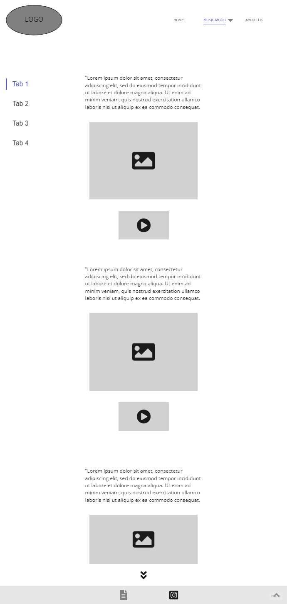

DOCUMENTAZIONE
Abstract
Music Everytime vuole avvicinare i giovani under 30 alla musica della seconda metà del secolo scorso, anni Sessanta-Novanta.
Il propone testi brevi con linguaggio semplice per una lettura scorrevole. L'accento è su una selezione di canzoni dagli anni Sessanta agli anni Novanta rivolte ai giovani per mantenere in vita una musica senza età.
PROJECT MANAGEMENT PLAN
Benchmarking
Obiettivo
Il progetto parte dalla mia passione per le canzoni del secolo scorso (anni Sessanta-Novanta). Il sito web si prefigge l'obiettivo di diffondere l'idea che la musica di quell'epoca non debba essere dimenticata.
L'obiettivo principale del sito è quello di rivolgersi ai giovani di età compresa tra i 15 e i 25 anni per far conoscere la musica degli anni del secolo scorso, dagli anni Sessanta agli anni Novanta.
Target utente
Per l'obiettivo prefissato, il target utente primario del sito sono i giovani under 30.
Ulteriore target utente sono gli adulti che hanno vissuto la musica del periodo in questione.
Competitors
SwingFever - sezione "Generi musicali anni '20-'60 :
tratta della storia dei diversi generi musicali presenti un una parte del periodo trattato dal mio sito (gli anni Sessanta). Il target è molto vario: spazia da utenti interessati alla storia dei generi musicali, ad utenti intenzionati a seguire eventi o corsi di ballo, fino a coloro che vogliono acquistare abiti dell'epoca trattata.
Musica&Memoria
Il sito confronta la musica italiana con la musica internazionale di tutti i tempi e di tutti i generi musicali.
Sono presenti altri siti competitors dedicati alla musica moderna, al cui interno è presente una sezione dedicata alla musica del periodo Sessanta-Novanta.
Struttura e layout
Architettura del sito
*(Img. 1 architettura del sito)
Wireframe

* Img. 2 wireframe home __ pagina unica {scroll-behavior: smooth}
* Img. 3 wireframe pagine interne
Look and feel
I colori utilizzati sono:
bianco, codice hex #C3A476 (sfumatura medio chiaro di marrone), grigio e nero. Per una grafica chiara, pulita e di facile lettura.
I font utilizzati sono:
• Lato, sans-serif per i paragrafi, per rendere più scorrevole la lettura.
• Kotta One, sans-serif per i titoli, per riprendere il font del logo.
Negli elementi della pagina sono presenti foto realizzate personalmente (nella home) e nelle pagine interne a "Music Mood" è presente una grafica vettoriale animata, realizzata con l'utilizzo di Figma e CSS.
Linguaggi e strumenti
Linguaggi:
• HTML
• CSS
Strumenti:
• Sublimetext2 per la scrittura HTML e CSS
• Github per la pubblicazione
• W3School per studio degli elementi
• Instagram per video di html e CSS
• Figma per immagini
• Miro per albero del sito e wireframe
• Google fonts per i testi
• Fontawesome per le icone
• Favicon.cc per icona tab
• Colorspace per i colori
• Non ho utilizzato Bootstrap perché non si adeguava alle impostazione che volevo dare al sito. Inoltre volevo sperimentare da sola.
• Instagram per promozione sito
• WhatApp per promozione sito
• Google Analytics per monitorazione sito
COMMUNICATION STRATEGY DOCUMENT
Background
Il principale competitor è SwingFever poiché contiene il reindirizzamento ai link delle canzoni di cui parla. Quest'ultima è la caratteristica primaria del sito Music Everytime.
Il sito SwingFever, inoltre, contiene numerosi link che reindirizzano l'utente fuori dalla pagina, per l'acquisto di prodotti su siti terzi (da libri a vestiti).
Offre vari servizi di ricerca verso altri siti e luoghi fisici.
Da un punto di vista dell'usabilità, contiene troppe sezioni e rimandi ad altri siti, rendendo difficile orientarsi.
La grafica del sito è ben fatta poiché rimanda idealmente ai colori dell'epoca di cui tratta.
Il sito Musica&Memoria contiene numerosi reindirizzamenti ad altri siti. La struttura è associabile ad una enciclopedia di contenuti, ed è realizzato con una grafica minimale anni Novanta. Contiene molto testo e non rispetta la regola dell'F-pattern. Ciò rende i contenuti di difficile lettura.
Obiettivi comunicativi
L'obiettivo primario del sito è quello di far conoscere la mia idea sulla musica e far vedere che anche se le canzoni dagli anni Cinquanta agli anni Novanta non si sentono più molto spesso, se non su certi canali o programmi di nicchia, restano anche per chi quegli anni non gli ha vissuti, un punto di riferimento della musica di tutti i tempi. Il sito non si propone obiettivi di educazione o divulgazione di informazioni, ma semplicemente come spazio personale per comunicare la mia visione sulla musica.
Target audience e messaggio
Il sito parla potenzialmente a tutti coloro che ascoltano musica e, in particolare, a cui piace la musica degli anni trattati nel sito. Quindi parla a donne e uomini adulti che abbiano voglia di fare un salto nel passato e rivivere le emozioni della musica di quegli anni. Ma parla anche alle ragazze e ragazzi che vogliono immergersi in un mondo di musica che seppur poco sentito, resta sempre attuale. (non va bene... vedi doc)
Promozione
La promozione del sito è avvenuta online mediante l'utilizzo delle piattaforme social WhatsApp e Instagram.
Sono stati pubblicati su due pagine Instagram una storia e un post di promozione contenenti il link al sito. Una pagina profilo personale e una dedicata esclusivamente alla promozione del sito Music Everytime.
Valutazione dei risultati
Per la valutazione dei risultati del sito ho utilizzato come metrica l'obiettivo di raggiungere almeno 50 visite al sito web.
Ho raggiunto il mio obiettivo di far conoscere le canzoni anni Sessanta-Novanta al mio target utente (giovani 15-25 anni) perché ho utilizzato come mezzo di promozione i social network Instagram e WhatsApp.
L'obiettivo di 50 visite è stato superato raggiungendo 91 visite da utenti unici in sole 24h.
Img. 4 numero visite totali
Img. 5 analisi dati demografici
Img. 6 analisi eventi sito